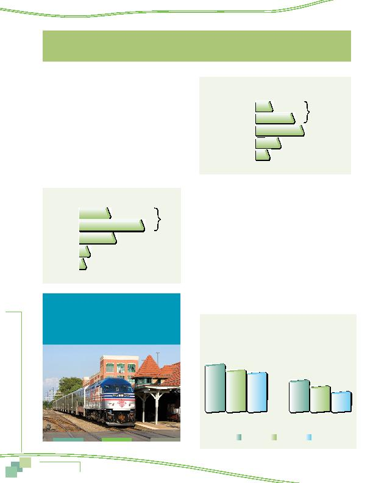

MWCOG-Comm
uter Conn
ecti
on
s-- 2010 State o
f th
e Comm
ute Report
1 8
A series of questions were added to the 2010 SOC survey to
explore commuters' impressions of the role transportation plays
in creating a livable region. These questions focused on:
n
Quality of life
n
Satisfaction with transportation and desired improvements
n
Benefits of ridesharing
QUALITY OF LIFE
The survey asked respondents to rate quality of life in the
Washington region, using a five-point scale in which 1 meant
"poor" and 5 meant "excellent." Two-thirds (66%) of respondents
gave a high rating for quality of life in the Washington region
(rating of 4 or 5 on a 5-point scale). Only nine percent gave a
low rating (1 or 2).
TRANSPORTATION SATISFACTION
Commuters gave lower ratings for their satisfaction with
transportation in the region (Figure 2). Only 38% said they were
satisfied (rating of 4 or 5 on a 5-point scale) and more than a
quarter (27%) said they were not satisfied (rating of 1 or 2)
Satisfaction by Home Location
Respondents who
lived in the Inner Core gave somewhat higher ratings for both
quality of life and transportation, as shown in Figure 3, than
did respondents in either the Middle Ring or Outer Ring. Three
quarters of Inner Core respondents rated quality of life a 4 or
5, compared with 65% of Middle Ring respondents and 61% of
Outer Ring respondents. About half of Inner Core respondents
gave high marks to transportation satisfaction, while only 38%
of Middle Ring respondents and 29% of Outer Ring respondents
rated transportation satisfaction as high.
Figure 1 - Ratings for Quality of Life
21%
45%
66%
25%
6%
3%
5Excellent
4
3
2
1Poor
Figure 2 - Ratings for Transportation Satisfaction
Rating of 4 or 5
5Very Satisfied
4
3
2
1Not at all satisfied
11%
27%
38%
35%
18%
9%
Figure 3
Ratings for Quality of Life and Transportation
Rating of 4 or 5
By Home Location
Quality of life
rating of 4 or 5
Transportation satisfaction
rating of 4 or 5
74%
65%
61%
49%
38%
29%
Inner Core
Middle Ring
Outer Ring
Two-thirds (66%) of respondents gave
a high rating for quality of life in the
Washington region (rating of 4 or 5 on a
5-point scale).
Survey Results
TRANSPORTATION SATISFACTION